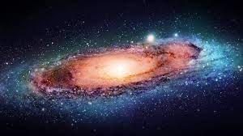

Posted 7h ago
The milky way
The Milky Way is a barred spiral galaxy around 13.6 billion years old with large
pivoting arms
stretching out across the cosmos. Our home galaxy's disk is about
100,000 light-years in diameter and
just 1000 light-years thick, according to Las
Cumbres Observatory.
Just as Earth orbits the sun, the solar system orbits the center of the Milky Way.
Despite hurtling
through space at speeds of around 515,000mph (828,000kmph)
our solar system takes approximately 250
million years to complete a single
revolution, according to Interesting Engineering. The last time our
planet was in this
position, dinosaurs were just emerging and mammals were yet to evolve.
If the center
of the Milky Way were a city, we would be living in suburbia, about 25,000 to 30,000
light-years from the city center. Life in the outskirts is good; we find ourselves nestled
in one of
the smaller neighborhoods, the Orion-Cygnus Arm, sandwiched between
larger Perseus and Carina-Sagittarius
arms. If we were to travel inwards towards the
city center, we would find the Scutum-Centaurus and Norma
arms.
On a clear night, void of light pollution, we can catch a glimpse of the bright lights of
the galactic
city streaking across the night sky. Our window into the universe, this
milky white band of stars, dust
and gas is where our galaxy gets its name.
Lying at
the very heart of the Milky Way is a supermassive black hole called Sagittarius A*
. About
4 million times the mass of the sun, this beast consumes anything that strays
too close, gorging on
an ample supply of stellar material enabling it to grow into a giant.
In 2022, we imaged this glutton
at the core of our galaxy for the very first time, through
an innovative technique allowing us to view
the shadow of the black hole.
Earth is located roughly halfway to the edge of the Milky Way, at a distance of about
26,000 light years
from the center. We reside in a feature known as the Orion Spur
(sometimes also called the Orion Arm),
which is an offshoot between the larger Sagittarius
and Perseus Arms that lie inwards and outwards of our
location.